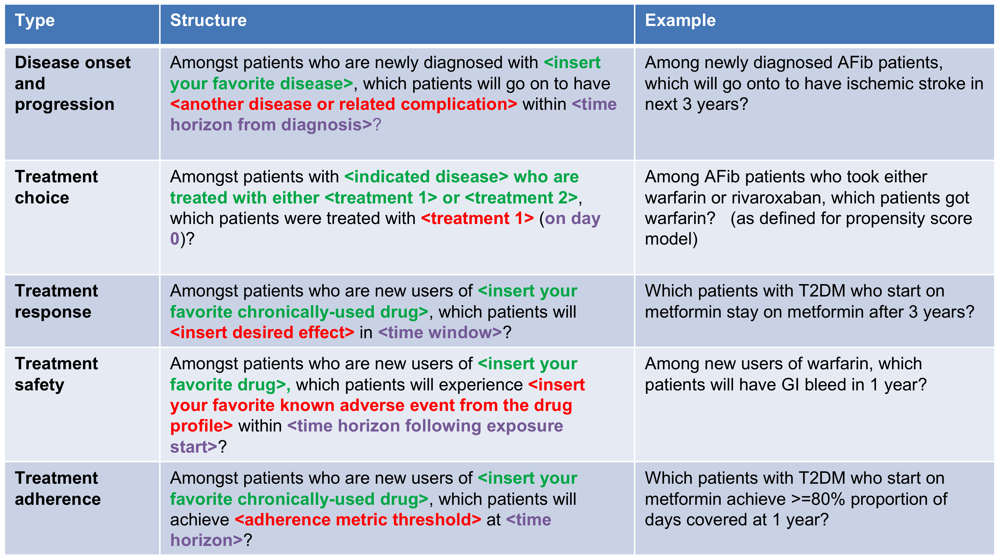

PatientLevelPrediction is part of the OHDSI Methods Library.
Introduction
PatientLevelPrediction is an R package for building and validating patient-level predictive models using data in the OMOP Common Data Model format.
Reps JM, Schuemie MJ, Suchard MA, Ryan PB, Rijnbeek PR. Design and implementation of a standardized framework to generate and evaluate patient-level prediction models using observational healthcare data. J Am Med Inform Assoc. 2018;25(8):969-975.
The figure below illustrates the prediction problem we address. Among a population at risk, we aim to predict which patients at a defined moment in time (t = 0) will experience some outcome during a time-at-risk. Prediction is done using only information about the patients in an observation window prior to that moment in time.

To define a prediction problem we have to define t=0 by a Target Cohort (T), the outcome we like to predict by an outcome cohort (O), and the time-at-risk (TAR). Furthermore, we have to make design choices for the model we like to develop, and determine the observational datasets to perform internal and external validation. This conceptual framework works for all type of prediction problems, for example those presented below (T=green, O=red).

Features
- Takes one or more target cohorts (Ts) and one or more outcome cohorts (Os) and develops and validates models for all T and O combinations.
- Allows for multiple prediction design options.
- Extracts the necessary data from a database in OMOP Common Data Model format for multiple covariate settings.
- Uses a large set of covariates including for example all drugs, diagnoses, procedures, as well as age, comorbidity indexes, and custom covariates.
- Includes a large number of state-of-the-art machine learning algorithms that can be used to develop predictive models, including Regularized logistic regression, Random forest, Gradient boosting machines, Decision tree, Naive Bayes, K-nearest neighbours, Neural network and Deep learning (Convolutional neural networks, Recurrent neural network and Deep nets).
- Allows you to add custom algorithms.
- Contains functionality to externally validate models.
- Includes functions to plot and explore model performance (ROC + Calibration).
- Includes a shiny app to interactively view and explore results.
- Implements existing models.
- Builds ensemble models.
- Builds Deep Learning models.
- Generates learning curves.
- Automatically creates a word document containing all the study results.


Technology
PatientLevelPrediction is an R package, with some functions implemented in C++ and python.
System Requirements
Requires R (version 3.3.0 or higher). Installation on Windows requires RTools. Libraries used in PatientLevelPrediction require Java and Python.
The python installation is required for some of the machine learning algorithms. We advise to install Python 3.7 using Anaconda (https://www.continuum.io/downloads).
Getting Started
To install the package please read the Package Installation guide
Have a look at the video below for an extensive demo of the package.

Please read the main vignette for the package:
In addition we have created vignettes that describe advanced functionality in more detail:
- Building Multiple Patient-Level Predictive Models
- Implementing Existing Patient-Level Predictive Models
- Adding Custom Machine Learning Algorithms
- Building Deep Learning Models
- Building Ensemble Models
- Generating Learning Curves
Package manual: PatientLevelPrediction.pdf
Getting Involved
We like to get involved in the development of this package through pull requests to our development branch.
- Developer questions/comments/feedback: OHDSI Forum
- We use the GitHub issue tracker for all bugs/issues/enhancements
Acknowledgements
- The package is maintained by Jenna Reps and Peter Rijnbeek and has been developed with major contributions from Martijn Schuemie, Patrick Ryan, and Marc Suchard.
- We like to thank the following persons for their contributions to the package: Seng Chan You, Ross Williams, Henrik John, Xiaoyong Pan, James Wiggins.
- This project is supported in part through the National Science Foundation grant IIS 1251151.